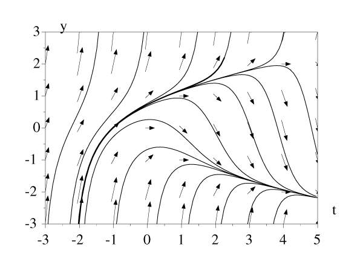

Simulation de
systèmes dynamiques
Claude Gomez
Tous ces articles en ligne sur Scilab ont été écrits pour
LINUX MAGAZINE FRANCE par les
développeurs du Scilab Group. Les articles sont sous
licence FDL (Free Documentation
Licence)
1 Systèmes dynamiques
L'évolution de son compte d'épargne logement, la gestion de ses
actions ou la trajectoire de la fusée Ariane sont des exemples de
systèmes dynamiques. Un tel système évolue avec le temps
t. On part d'un instant t=t0 et on se demande comment le système va se
comporter dans le futur : combien j'aurai d'argent sur mon compte, mes actions
vont-elles monter ou baisser, la fusée va-t'elle poursuivre la
trajectoire prévue et le virus va-t'il se développer ou
disparaître ? Et tout cela en fonction d'un certain nombre de
paramètres. C'est ce qu'on appelle la simulation du
système dynamique.
Pour résoudre ces problèmes, on utilise un modèle
mathématique qui va représenter au mieux le
phénomène que l'on veut simuler. Les équations
différentielles sont un des modèles les plus courants pour
représenter les systèmes dynamiques. Nous sommes donc
amenés à la résolution de celles-ci. Le premier
réflexe est d'utiliser un système de calcul formel pour cela (ces
systèmes, comme Maple ou MuPAD par exemple, permettent de
réaliser des calculs mathématiques symboliques et exacts). On
obtiendrait ainsi la fonction solution de l'équation et il n'y aurait
plus qu'à l'utiliser pour trouver la solution. Par exemple, la masse
y(t) d'une substance radioactive qui se décompose avec un
taux a par unité de masse est
modélisée par l'équation différentielle
linéaire : {
. où y0 représente la
masse à l'instant t0. Ici et
dans toute la suite y'(t) représentera la
dérivée de y par rapport au temps t. On peut
résoudre explicitement cette équation différentielle dont
la solution est y(t)=y0exp(a(t-t0)).
Il est alors facile de connaître l'évolution de la masse
y(t) puisque l'on a son expression.
Malheureusement, dans la majorité des cas, on n'aura pas cette chance et
il sera impossible de trouver une fonction solution de l'équation
différentielle. C'est le cas pour la simple équation
différentielle suivante :
que nous étudierons plus loin. Dans ce cas, seule une résolution
numérique (à opposer avec une résolution purement
symbolique) est possible. Et il faut avoir une grande efficacité pour
obtenir la solution en un temps le plus court possible pour traiter des
problèmes de grande taille : en effet on aura la plupart du temps non
pas une équation différentielle à résoudre, mais un
système d'équations différentielles
(c'est-à-dire plusieurs équations différentielles
couplées, voir le paragraphe 2.2) sur un grand
nombre de pas de temps. En général, cela est difficile voire
impossible à réaliser dans un système de calcul formel. De
plus, il faut pouvoir résoudre la plus grande classe de problèmes
possibles : c'est là qu'un système comme Scilab avec ses
solveurs est indispensable.
De plus, après la résolution numérique, c'est
généralement en traçant des courbes que l'on va
réellement voir l'évolution avec le temps du
résultat : Scilab est parfaitement équipé pour ça
et c'est ce que nous allons voir dans les paragraphes suivants.
2 Le solveur ODE
La fonction ode est la fonction principale de résolution
de systèmes d'équations différentielles. C'est en fait une
interface à une famille de solveurs appelés ODEPACK. Nous allons
voir deux exemples d'utilisation.
2.1 Un système dynamique en dimension 1
On ne peut pas trouver de solution d'un système tel que (1) à l'aide d'une formule explicite. On va donc
calculer une solution numérique et tracer dans le plan
(t,y) l'évolution des trajectoires y(t)
passant par le point initial donné (t0,y0).
Usuellement pour avoir une première idée de la forme des
trajectoires on trace les lignes de champ : ce sont les tangentes aux
trajectoires pour tous les points d'une grille. Pour cela, on n'a pas besoin de
résoudre l'équation et on utilise la fonction champ
.
D'abord, on définit la fonction qui représente le système,
soit f(t,y)=y2-t, en Scilab. Comme cette fonction est
très simple, on utilise :
deff("yprim=f(t,y)","yprim=y^2-t")
puis on définit le cadre en (t,y), c'est-à-dire les
valeurs min et max de t et y, dans lequel on va tracer les lignes
de champ :
tmin=-3; tmax=5; ymin=-3; ymax=3;
t=tmin:tmax; y=ymin:ymax;
et enfin on trace les lignes de champ :
nt=size(t,"*"); ny=size(y,"*");
ft=ones(nt,ny);
fy=feval(t,y,f);
xset("font",2,12)
champ(t,y,ft,fy)
xtitle("","t","y")
Ici feval est utilisé pour évaluer la fonction
f aux points de la grille.
Cela donne la figure 1(a).

Figure 1:
On va ensuite résoudre le système sur un intervalle de temps de 0
à 5, c'est-à-dire en partant du point t=0,y(0)=0
jusqu'à t=5 par pas de temps de 0,1 (noter que ce pas de temps
détermine les instants où la solution est calculée, mais
qu'en fait le solveur calcule de façon interne un pas variable optimal).
Cela se fait simplement par :
t0=0; y0=0; tfin=5; dt=0.1; T=t0:dt:tfin;
sol=ode(y0,t0,T,f);
où f est la fonction définie plus haut et en
retour sol est la valeur de y(t) pour toutes les
valeurs de t entre 0 et 5 par pas de 0,1, soit un vecteur de 51
éléments. Tracer la trajectoire correspondante peut se faire avec
:
xset("thickness",2); plot2d(T,sol,1,"000")
où "000" sert à utiliser le cadre et
les échelles graphiques précédentes (voir le help de
plot2d).
Mais il est plus amusant de cliquer sur un point du cadre et de voir se tracer
la trajectoire passant par ce point. Cela peut se faire en utilisant
xclick. Cette fonction retourne le numéro du bouton
cliqué ainsi que les coordonnées du point cliqué. Il
suffit alors de réaliser une boucle infinie jusqu'à ce que l'on
clique par exemple sur le bouton de droite de la souris (dans ce cas c_i
dans le programme ci-dessous est égal à 2
). À partir de chaque point cliqué, on résout
l'équation différentielle une fois dans le sens des t
croissants jusqu'à tmax et une fois dans le sens des
t décroissants jusqu'à tmin. Cela donne le
code suivant :
while(%t)
[c_i,t0,y0]=xclick();
if c_i==2 then break end;
if t0>=tmin & t0<=tmax & y0>=ymin & y0<=ymax then
T=t0:dt:tmax; sol=ode(y0,t0,T,f);
plot2d(T(1:size(sol,"*")),sol,1,"000")
T=t0:-dt:tmin; sol=ode(y0,t0,T,f);
plot2d(T(1:size(sol,"*")),sol,1,"000")
end
end
où l'on a utilisé T(1:size(sol,"*"))
car parfois la solution part à l'infini et donc le solveur
s'arrête avant la fin.
Cela donne la figure 1(b).
2.2 Des requins et des sardines ou la dure vie des
prédateurs
Nous allons traiter ici le cas des systèmes de
deux équations différentielles. On a un système dont les
fonctions inconnues sont maintenant x(t) et y(t).
L'exemple le plus classique, qui est d'ailleurs à l'origine des
équations différentielles, est celui de la trajectoire des
planètes autour du soleil. Maintenant pour voir les solutions,
on va les placer dans ce que l'on appelle le plan de phase,
c'est-à-dire le plan (x,y) et les solutions se
promèneront, lorsque le temps t varie, le long de ces
trajectoires : penser aux planètes.
D'abord une petite histoire.
À Trieste, pendant la première guerre mondiale, la pêche
avait bien sûr diminué à cause des
événements. La pêche consistait à lancer des filets
et à récupérer tous les poissons. Le bureau des
pêches avait constaté qu'alors la proportion de poissons du style
requins, peu intéressants pour la consommation, avait
considérablement augmenté par rapport aux poissons
intéressants du style sardines. Ils demandèrent l'aide de
Volterra qui modélisa le système requins-sardines par le
système des deux équations différentielles suivantes
où x(t) représente le nombre de sardines et
y(t) représente le nombre de requins : {
| x'(t)=a x(t)-b x(t)y(t)
a,b > 0 |
| y'(t)=c x(t)y(t)-d y(t)
c,d > 0 |
| x(0)=x0, y(0)=y0 |
. Ce modèle approché, appelé aussi système de
Lotka-Volterra, signifie qu'en l'absence de requins les sardines
prolifèrent x'(t)=a x(t), qu'en
l'absence de sardines les requins disparaissent
y'(t)=-d y(t) et le terme en
x(t)y(t), qui représente la rencontre des
requins et des sardines, augmente le nombre de requins et diminue le nombre de
sardines (car ces dernières sont mangées par les requins).
À partir de ce modèle Volterra en déduit, sans pouvoir
faire les calculs numériques à l'époque, que plus on
pêche de poissons, plus la proportion de sardines, donc de poissons
intéressants, est importante ! C'est ce que nous allons essayer de
retrouver par le calcul.
On prendra par exemple pour l'application numérique a=3,
b=1, c=1 et d=2.
On crée d'abord un fichier volterra.sci dans lequel on
définit le système précédent sous la forme d'une
fonction vectorielle f(t,Y) où Y
représente le vecteur (x,y) (on rappelle que les fichiers
lus par Scilab doivent toujours être terminés par un retour
chariot) :
function Yprim=f(t,Y)
x=Y(1); y=Y(2);
xprim=a*x-b*x*y;
yprim=c*x*y-d*y;
Yprim=[xprim;yprim]
et que l'on charge par getf("volterra.sci").
On va d'abord tracer les lignes de champ dans le plan de phase, ce qui permet
encore d'avoir une idée des trajectoires sans résoudre le
système : cela revient à tracer le vecteur
(x'(t),y'(t)) en chaque point d'une grille. On
utilise ici la fonction fchamp faite exprès pour
ça :
a=3; b=1; c=1; d=2;
xmin=0; xmax=6; ymin=0; ymax=6;
xr=xmin:0.5:xmax; yr=ymin:0.5:ymax;
xset("font",2,12)
fchamp(f,0,xr,yr)
xtitle("","x","y")
où la fonction f est celle définie dans
volterra.sci. On voit le champ de vecteurs sur la figure
2(a).
On va faire comme au paragraphe précédant et tracer des
trajectoires qui passent par le point cliqué. Cela se fait de la
même façon par :
xset("thickness",2)
t0=0; tmax=5; dt=0.05;
T=t0:dt:tmax;
while(%t)
[c_i,x0,y0]=xclick();
if c_i==2 then break end;
if x0>=xmin & x0<=xmax & y0>=ymin & y0<=ymax then
sol=ode([x0;y0],t0,T,f);
plot2d(sol(1,:),sol(2,:),1,"000")
end
end
La seule différence est qu'ici il faut donner un vecteur (x
0,y0)
comme condition initiale et que le tableau sol en sortie de
ode est maintenant une matrice à deux lignes correspondant
à x(t) (nombre de sardines) et y(t) (nombre
de requins).
Les trajectoires tournent autour du point d'équilibre
(x=d/c=2,y=a/b=3) et on peut en voir
sur la figure 2(a).
Figure 2:
On peut vérifier que lorsqu'on augmente la fréquence de
pêche, c'est-à-dire a Þ
a-a et d Þ d+d, le point
d'équilibre se déplace vers un lieu où il y a moins de
requins et plus de sardines. C'est ce que l'on voit sur la figure
2(b) en prenant a=2 et
d=2 et en refaisant les calculs dans Scilab. Le
point d'équilibre passe du point (2,3) au point (4,1). On retrouve donc
bien les résultats de Volterra.
3 Le solveur DASSL
Les systèmes dynamiques du paragraphe précédent
étaient des systèmes explicites, c'est-à-dire que
les dérivées y'(t) pouvaient s'écrire
explicitement en fonctions de y(t) et de t. Ce n'est
malheureusement pas toujours le cas et alors les problèmes deviennent
très difficiles voire impossibles à résoudre. C'est
là qu'intervient le deuxième solveur de Scilab appelé
DASSL ; il permet de résoudre une grande classe de problèmes
implicites.
3.1 Le pendule qui glisse
Il est difficile de trouver des problèmes implicites simples que l'on
peut résoudre sans trop de calculs. Un exemple encore pas trop
compliqué est celui du pendule qui glisse avec frottement le long d'une
courbe dans un plan.
La courbe sur laquelle va glisser le pendule, dans le plan (x,y),
est y=x2-cos(w x)/3, ce qui correspond à un magnifique
dos de chameau à l'envers.
Nous donnons ci-dessous les équations du mouvement du pendule qui vont
nous donner le système différentiel à résoudre : {
| x'=u1 y'=u2 q'=u3 |
| (M+m) u'1+m l cos(q) u'3=m l sin(q)
u32
-l(-2 x+w
sin(w x)/3)-k u1 |
| (M+m) u'2+m l sin(q) u'3=-m l cos(q)u32 -(M+m)g-l-k u2 |
| m l cos(q) u'1+m l sin(q) u'2+m l2 u'3=-m g sin(q)
|
| 0=(-2 x+wsin(w x)/3)
u1+u2 |
. où x et y sont les coordonnées du bout
supérieur du pendule, q est l'angle que fait
le pendule avec la verticale, M est la masse du bout supérieur du
pendule, m celle du bout inférieur, l est la longueur du
pendule, g est l'accélération de la pesanteur et k
est le coefficient de frottement.
Pour les curieux, sachez que l'on a utilisé une formulation de Lagrange
avec la contrainte pour le bout supérieur du pendule de suivre la
courbe, que l'on a différentié cette contrainte et que l'on a
ensuite rajouté les frottements (l est un
multiplicateur de Lagrange).
La fonction dassl s'utilise presque de la même
façon que ode. On définit d'abord le
système différentiel précédent sous la forme
f(t,Y(t),Y'(t))=0. La fonction
f correspondante est définie dans le fichier
pendule.sci :
function [res,ires]=f(t,Y,Yprim)
x=Y(1); y=Y(2); theta=Y(3); u=Y(4:6); lambda=Y(7);
xprim=Yprim(1); yprim=Yprim(2); thetaprim=Yprim(3);
uprim=Yprim(4:6);
res(1)=xprim-u(1);
res(2)=yprim-u(2);
res(3)=thetaprim-u(3);
res(4)=(M+m)*uprim(1)+m*l*cos(theta)*uprim(3)-m*l*sin(theta)*u(3)^2..
+lambda*(-2*x+omega*sin(omega*x)/3)+k*u(1);
res(5)=(M+m)*uprim(2)+m*l*sin(theta)*uprim(3)+m*l*cos(theta)*u(3)^2..
+(M+m)*g+lambda+k*u(2);
res(6)=m*l*cos(theta)*uprim(1)+m*l*sin(theta)*uprim(2)+m*l^2*uprim(3)..
+m*g*sin(theta);
res(7)=-((-2*x+omega*sin(omega*x)/3)*u(1)+u(2));
ires=0;
où Y est ici un vecteur de 7 éléments :
par exemple Y(1) et Y(2) sont les
coordonnées x et y du bout supérieur du pendule et
Y(3) est l'angle
q qu'il fait avec la verticale. On charge à
nouveau ce fichier dans Scilab par getf("pendule.sci")
. On appelle ensuite dassl de la façon suivante
:
// les donnees numeriques
omega=3.3;
g=10; l=1; m=1; M=1; k=0.5;
// les valeurs initiales
x0=1; y0=1+cos(omega)/3; theta0=0; u0=[0;0;0];
Y0=[x0;y0;theta0;u0;0];
uprim0=[0;-g;0]; Yprim0=[u0;uprim0;0];
// instants ou l'on calcule
t0=0; T=t0:0.05:20;
// parametres de dassl
info=list([],0,[],[],[],0,0);
atol=[0.0001;0.0001;0.0001;0.0001;0.0001;0.0001;0.001];
rtol=atol;
// appel de dassl
sol=dassl([Y0,Yprim0],t0,T,rtol,atol,f,info);
Sans rentrer dans les détails, disons que info est une
liste de paramètres à donner à DASSL (on a pris ici la
valeur par défaut) et atol et rtol
correspondent à tests de convergence que l'on affaiblit ici pour que
DASSL puisse réaliser les calculs en un temps raisonnable.
Le résultat se retrouve dans sol et il faut savoir que
l'on retrouve la position du bout supérieur du pendule
(x(t),y(t)) dans sol(2,:) et
sol(3,:) et l'angle
q que fait le pendule avec la verticale se retrouve
dans sol(4,:). On peut alors tracer la courbe ainsi que
quelques positions du pendule sur la courbe par :
// extraction de x, y et theta de la solution
x=sol(2,:); y=sol(3,:); teta=sol(4,:); n=size(x,"*");
r=0.05; // rayon de la boule du pendule
// coordonnees du bout inferieur du pendule
xp=x+l*sin(teta); yp=y-l*cos(teta);
xp1=x+(l-r)*sin(teta); yp1=y-(l-r)*cos(teta);
// definition du cadre et trace de la courbe
xmin=-1.5; xmax=1.5; ymin=-1.1; ymax=0.9;
vx=[xmin:0.01:xmax]'; vy=vx.*vx+cos(omega*vx)/3;
xset("thickness",2)
plot2d(vx,vy,1,"032"," ",[xmin,ymin,xmax,ymax])
// trace du pendule en divers instants
T=[1,100,110,120,200,401];
for i=T
plot2d([x(i);xp1(i)],[y(i);yp1(i)],1,"000")
xfarc(xp(i)-r,yp(i)+r,2*r,2*r,0,360*64)
end
La figure 3 montre le résultat.
Figure 3:
En fait, on aurait pu, après avoir calculé la solution,
réaliser une animation du comportement du pendule, mais cela aurait
été difficile à montrer sur une figure...
Enfin, pour ceux qui brûlent de savoir vers quelle bosse (ou trou ?) du
chameau inversé le pendule va tendre, la réponse donnée
par le calcul numérique est : celui de droite.
3.2 Amélioration du temps de calcul
En fait, on se rend compte que le calcul précédent,
c'est-à-dire l'appel de DASSL, pour calculer la solution est lent. Sur
un Pentium II 450, le temps de calcul est (en secondes) :
-->timer();sol=dassl([Y0,Yprim0],t0,T,rtol,atol,f,info);timer()
ans =
4.13
ce qui de nos jours est insupportablement long...
On a vu dans un article précédent qu'il était possible
d'interfacer directement du C ou du fortran avec Scilab. L'idée est donc
de réaliser à l'aide d'un programme compilé le calcul de
la fonction f. Afin de rappeler de vieux souvenirs à certains et
de montrer un langage qui résiste au temps à d'autres, nous
allons écrire la fonction f en fortran dans le fichier
pendule.f :
subroutine f(t,yy,yyprim,res,ires,rpar,ipar)
doubleprecision t,yy(*),yyprim(*),res(*),rpar(*)
doubleprecision x,y,theta,xprim,yprim,thetaprim
doubleprecision u(3),uprim(3),lambda
doubleprecision g,k,l,gm,m,omega
logical creadmat
parameter (g=10,k=0.5,l=1,gm=1,m=1,omega=3.3)
x=yy(1)
y=yy(2)
theta=yy(3)
u(1)=yy(4)
u(2)=yy(5)
u(3)=yy(6)
lambda=yy(7)
xprim=yyprim(1)
yprim=yyprim(2)
thetaprim=yyprim(3)
uprim(1)=yyprim(4)
uprim(2)=yyprim(5)
uprim(3)=yyprim(6)
res(1)=xprim-u(1)
res(2)=yprim-u(2)
res(3)=thetaprim-u(3)
res(4)=(gm+m)*uprim(1)+m*l*cos(theta)*uprim(3)-m*l*sin(theta)
&*u(3)**2+lambda*(-2*x+omega*sin(omega*x)/3)+k*u(1)
res(5)=(gm+m)*uprim(2)+m*l*sin(theta)*uprim(3)+m*l*cos(theta)
&*u(3)**2+(gm+m)*g+lambda+k*u(2)
res(6)=m*l*cos(theta)*uprim(1)+m*l*sin(theta)*uprim(2)+
&m*l**2*uprim(3)+m*g*sin(theta)
res(7)=-((-2*x+omega*sin(omega*x)/3)*u(1)+u(2))
ires=0
end
Le programme ci-dessus n'est que la traduction des équations du
mouvement que l'ont avait écrites en Scilab dans le fichier
pendule.sci. On a donné les valeurs des paramètres
g, k,...en dur pour optimiser le temps de calcul. On aurait pu
les récupérer à partir de l'environnement Scilab. Par
exemple
if (.not.creadmat('M'//char(0),mm,nn,gm)) return
met dans la variable double précision fortran gm la
valeur de la variable Scilab M, mais il y a un surcoût
dû à l'appel de creadmat.
Bien sûr on aurait pu réaliser la même chose en C.
On compile alors et on linke facilement ce programme à Scilab par :
unix("f77 -O -c pendule.f")
link("pendule.o","f");
Il n'y a plus qu'à appeler à nouveau dassl en
prenant soin de remplacer f par "f"
car c'est une fonction compilée et non plus une fonction Scilab que l'on
utilise :
-->timer();sol=dassl([Y0,Yprim0],t0,T,rtol,atol,"f",info);timer()
ans =
0.09
On va tout de même environ 50 fois plus vite ! Et rassurez-vous, j'ai
vérifié que le résultat était le même que
tout à l'heure.
Lorsque l'on utilise des algorithmes itératifs du style des solveurs
comme ode, il est donc très profitable d'utiliser des
programmes C ou fortran compilés et linkés à Scilab.
4 Conclusion
Nous avons vu dans cet article le fonctionnement des deux principaux solveurs
de systèmes dynamiques représentés par des
équations différentielles ode et dassl
. Bien sûr, un grand nombre de réglages ainsi que
d'autres fonctionnalités existent pour ces solveurs. Après
modélisation, Scilab permet ainsi rapidement de réaliser la
simulation du système.
Il existe une autre possibilité pour simuler un système dynamique
: c'est d'utiliser Scicos, le simulateur graphique de systèmes hybrides.
Il sera décrit dans un article prochain, alors soyez patient car comme
le dit l'Ecclésiaste (3,1) : << Il y a un temps pout tout, un
temps pour toute chose sous le ciel >>.
Contacts
Site Web de Scilab : http://www-rocq.inria.fr/scilab
Serveur ftp : ftp://ftp.inria.fr/INRIA/Scilab
Adresse email : Scilab@inria.fr
Newsgroup : comp.soft-sys.math.scilab
This document was translated from LATEX
by HEVEA.